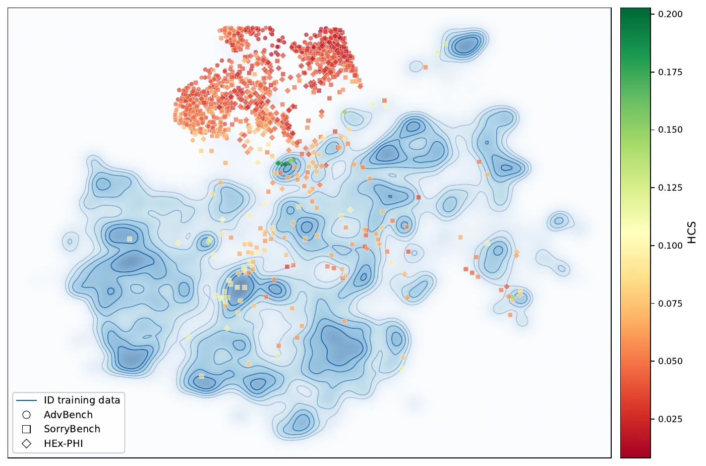
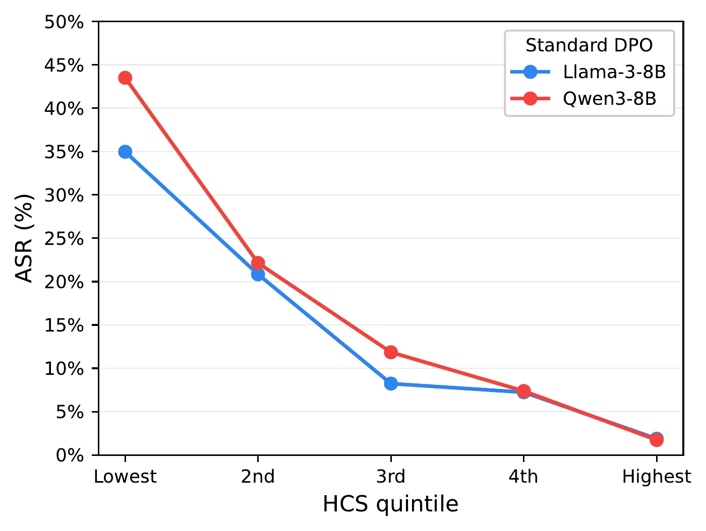
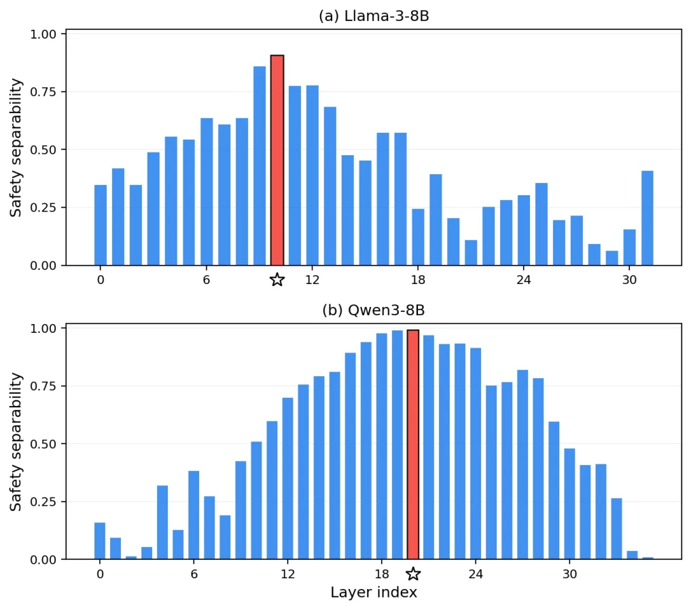
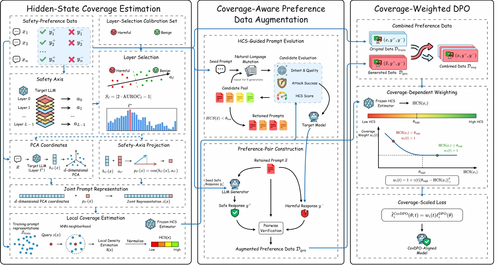
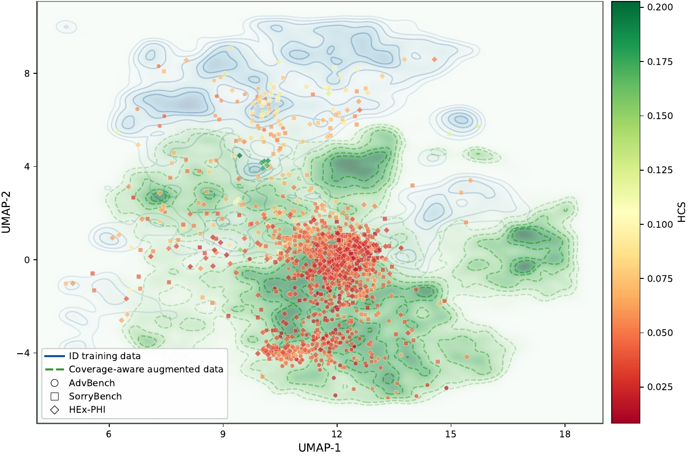
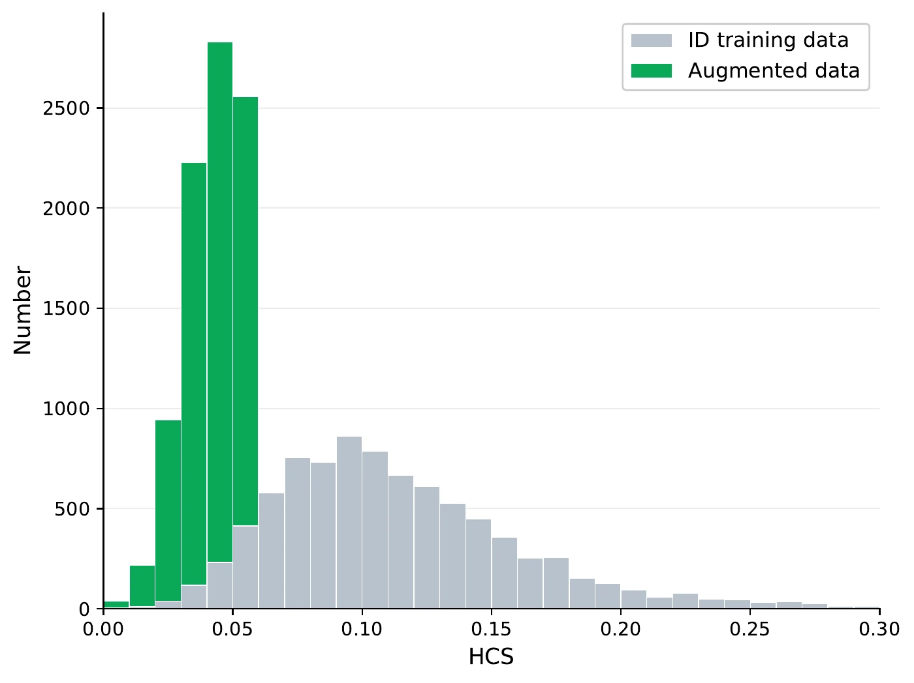
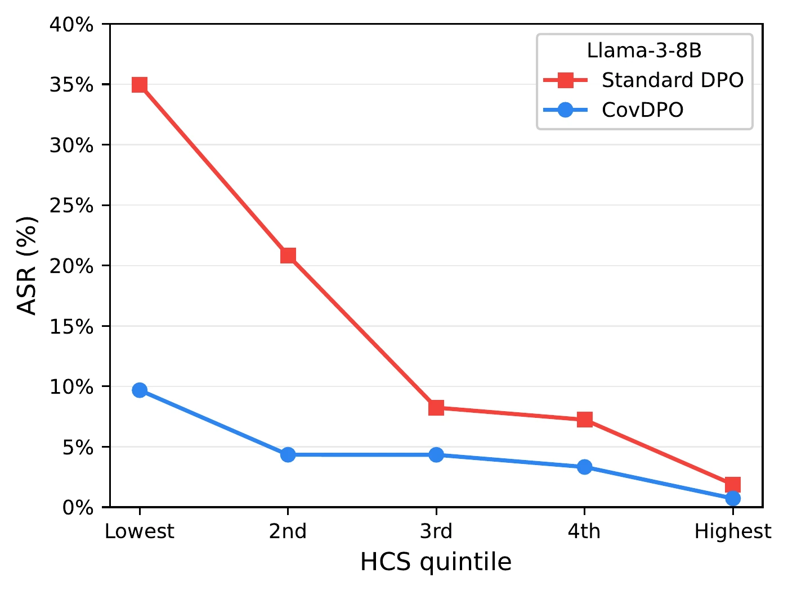
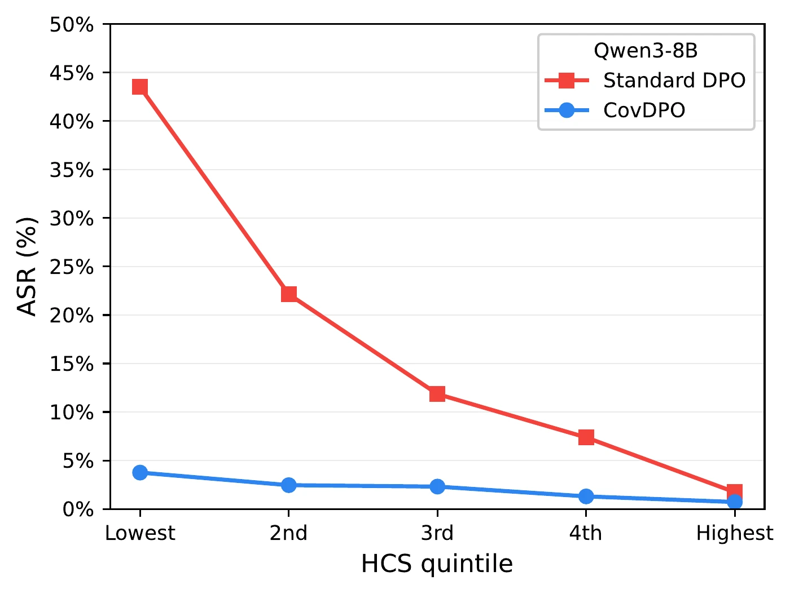

Estimate hidden-state coverage
In the selected representation, estimate local kNN density relative to the original ID safety-preference prompts. The resulting fixed HCS estimator supplies the same coverage signal to augmentation and training.
SAFETY ALIGNMENT × COVERAGE-AWARE DPO
Safety alignment can work on familiar harmful requests yet fail on new ones. CovDPO measures where preference data are sparse in a model's hidden-state space, then places and weights safety supervision there.

Safety failures are more frequent where preference data provide weaker coverage.
The Hidden-State Coverage Score (HCS) measures how densely the original safety-preference prompts surround a prompt in a model-specific representation space. We group held-out harmful prompts by HCS and compare Standard DPO attack success across quintiles.

The HCS estimator is fitted once on the original preference data and stays fixed during generation and training.
Coverage needs to retain differences between prompts while making safety-relevant differences visible. The latter are not equally clear at every layer: the strongest harmful–benign separation appears at different layers for Llama and Qwen.
At each candidate layer, safe and harmful responses in the original preference pairs define a contrastive safety axis. We project prompts onto that axis and select the layer that best separates harmful from benign prompts on an independent calibration set.
At the selected layer, HCS combines PCA coordinates, which retain the prompts’ local geometry, with the safety-axis projection. This keeps the coverage estimate sensitive to both neighborhood structure and the safety distinction used to choose the layer.

In the selected representation, estimate local kNN density relative to the original ID safety-preference prompts. The resulting fixed HCS estimator supplies the same coverage signal to augmentation and training.
Evolve harmful seed prompts toward lower HCS. Keep candidates only after intent, naturalness, and attack-success checks; sample an unsafe response, generate a prompt-specific safe answer, then validate the pair.
Train on the original 8,744 pairs plus 8,000 sampled augmented pairs. Examples below the high-coverage threshold receive a larger DPO loss weight; the weighting strength decays over the first half of training.

z(x) joins centered PCA prompt coordinates with a scaled cosine projection onto the response-derived safety axis. A kNN log-density is normalized with leave-one-out bounds from the ID training prompts and clipped to [0, 1]. Lower HCS means lower empirical local coverage in this chosen space.
wᵢ(t) = 1 + γ(t) · max(0, θhigh − HCS(xᵢ))²
Each per-example DPO loss is multiplied by this weight. HCS comes from the estimator fitted on the original ID data and then frozen.
The ID split of Cleaned-PKU-HH-SafeRLHF contributes 8,744 preference pairs. CovSafe-Pairs contains 32,968 verified augmented pairs; 8,000 are sampled uniformly and combined with the ID pairs for each CovDPO run (16,744 pairs total).
A training record contains a harmful prompt, its preferred safe answer (chosen), rejected harmful answer (rejected), and a fixed HCS value. The combined set is shuffled each epoch.
Full-parameter and rank-16 LoRA variants both train for 2 epochs with AdamW, BF16, an effective global batch of 256, and 8 AMD MI308X GPUs. Maximum sequence length is 512 tokens; maximum prompt length is 256 tokens.
LoRA uses α=32 and dropout 0.05 on seven projection modules. The learning rate decays linearly without warmup; coverage weight strength γ decays over the first half of training and then stays fixed.
| Model family | Full LR | LoRA LR | DPO β | θhigh | γ |
|---|---|---|---|---|---|
| Llama-3-8B | 5×10⁻⁶ | 5×10⁻⁵ | 0.1 | 0.15 | 80 → 40 |
| Qwen3-8B | 2×10⁻⁶ | 5×10⁻⁵ | 0.2 | 0.21 | 80 → 45 |
CovSafe-Pairs contains 32,968 automatically verified preference pairs from Llama- and Qwen-based generation pipelines. Training uses 8,000 sampled augmented pairs; the plots show the coverage and composition of this training subset.


After adding the training augmentation set, the mean kNN radius in the lowest original-HCS quintile shrinks by 19.9% on Llama and 17.2% on Qwen.
Avg. ASR is the unweighted mean over four harmful benchmarks and three fixed jailbreak evaluations. Lower is better. Select a model family to compare all evaluation results.
| Method | Harmful benchmarks | Jailbreak attacks | Avg. ↓ | Capability | Over-refusal | ||||||
|---|---|---|---|---|---|---|---|---|---|---|---|
| Adv ↓ | SORRY ↓ | HEx ↓ | Harm ↓ | Prefill ↓ | GCG ↓ | PAIR ↓ | MMLU ↑ | Hella ↑ | XSTest ↓ | ||
Adv, SORRY, HEx, Harm, Prefill, GCG, and PAIR report attack success rate (%). MMLU and Hella report accuracy (%); XSTest reports the refusal-phrase match rate on 250 safe prompts (%).


Removing both coverage-aware components raises Avg. ASR from 2.41% to 6.86% on Llama-3-8B and from 4.60% to 8.63% on Qwen3-8B. Removing either one alone also increases Avg. ASR; the relative contribution differs by backbone. The augmentation ablation replaces HCS-guided pairs with an equal-sized random-mutation set.
| Variant | Llama Avg. ASR ↓ | Qwen Avg. ASR ↓ |
|---|---|---|
| Full | 2.41% | 4.60% |
| w/o Weight | 6.56% | 4.71% |
| w/o Aug. | 4.19% | 5.39% |
| w/o Both | 6.86% | 8.63% |